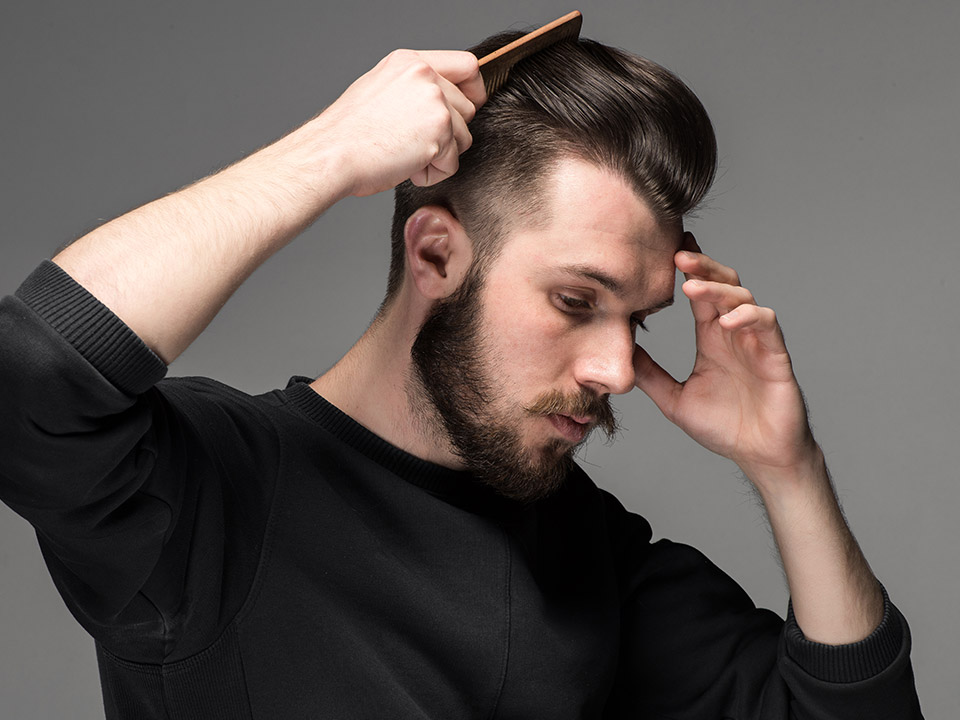

CONSEJOS DE CUIDADO
- El cuidado del cabello comienza por su higiene.
- Lave los cabellos mediante masaje activo de 15 minutos, 2 ó 3 veces por semana.
- Elija un champú adecuado a su tipo de cabello. Si tiene caspa, elija un champú anticaspa.
- Use un champú que contenga sustancias que estimulen la circulación capilar (extractos vegetales, complejos vitamínicos, etc.).
- Realice con frecuencia masajes capilares utilizando lociones capilares que le ayuden a estimular la circulación sanguínea capilar.

- La unión del sol y del agua del mar acentúa que el tallo capilar se seque. Tras el baño en agua de mar, es aconsejable lavar el pelo con champús suaves con agua tibia y enjuagar con abundante agua.
- Tome precauciones antes o después de la exposición solar.
- Evite la tracción mecánica del pelo, evitando gomas, clips, pinzas.
- El secador de pelo se debe utilizar lo menos posible. Es mejor que el pelo se seque al aire libre.
- No sujete el cabello húmedo.
- Lleve una dieta rica y equilibrada en vitaminas.